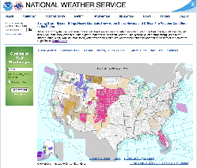
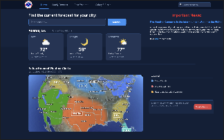
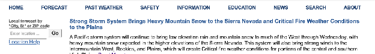
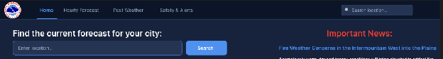
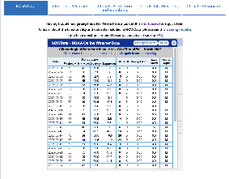
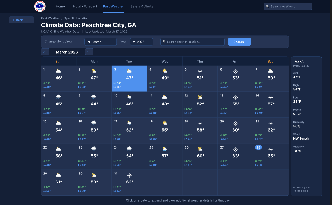
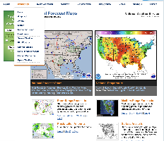
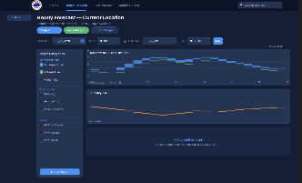

Recommendations
Major design changes, before-and-after comparisons, and our interactive prototype.
Design Recommendations
Recommendation 1: Redesign the homepage around local weather information
The first major change is a complete redesign of the home page. In the original design, users are immediately presented with a national weather alert map that many participants found irrelevant and difficult to interpret. Instead of this, our redesign puts location-based weather information at the forefront of the user’s attention, allowing for quick access to the most important information. This change significantly improves efficiency by allowing users to access the information most relevant to them without unnecessary navigation. In order to keep the spirit of the website intact, we made sure to keep the national weather alerts map on the home page, but simply moved it lower on the page and reduced its size. Additionally, by minimizing the amount of text and emphasizing key data, we are able to lower cognitive load and improve readability.


Recommendation 2: Simplify the navigation structure
The second major design change consists of reworking the navigation in favor of a simpler, more accessible experience. The original website relies heavily on dense dropdown menus with poorly prioritized options, which caused confusion and led to slower task completion times in our usability testing. Furthermore, the previous design did not give users an indicator of where they were in the website, leading to confusion. Our redesign improves on this navigation by introducing an improved navigation bar with clearly labeled categories that are highlighted based on the page in the website, removing the need for dropdown complexity and allowing users to know where they are. Frequently used features, such as hourly forecasts, past weather, and alerts are more prominent, while less common pages are placed elsewhere. This makes the website more learnable and reduces user error, making navigation predictable and quick. A potential trade-off is that users may struggle to find less frequently used pages, but this is outweighed by the improved experience for the majority of users.


Recommendation 3: Introduce stronger visual hierarchy and color usage
The third change we made was introducing a consistent visual hierarchy and color system. Participants reported feeling overwhelmed by the amount of text and lack of structure on the original site. The redesign we created makes use of consistent fonts, font sizing, spacing, and color to guide the users’ attention toward important information such as weather conditions, buttons, and important news. Color is used intentionally to distinguish important data from secondary content, improving scannability and accessibility. For example, our design’s “Past Weather” page clearly displays high, low, and average temperatures formatted clearly in distinct colors, while the previous design made use of a simple table that was difficult to navigate quickly. This change enhances both efficiency and accessibility for the average user, allowing them to scan the website in a way that is much more natural.


Recommendation 4: Prioritize high-frequency tasks over low-priority content
Our final major change focuses on the prioritization of information as a whole. In the original design, important information is hidden alongside other, less relevant details, which forces users to spend large amounts of time sifting through information that does not help them acquire what they need. Our redesign reorganizes content so that the most commonly needed information is shown first. This reduces the amount of time a given user spends on a task, especially if it is their first time using the site. While some less important data is not immediately visible, it will remain accessible for users who know the layout. This change ultimately leads to a large reduction in the time users spend on the website, as our participants found that even finding the simplest information took several tries to do.


Interactive Prototype
At the following link you will find our fully interactive prototype which demonstrates all of the design recommendations described above: View the high-fidelity Figma prototype
Conclusion
Reflections on the Design Process
In the end, this project has allowed our team to gain a deeper understanding of the importance of interface design in a user-centric product. While the National Weather Service is an excellent source of accurate and comprehensive weather data, our study has proven that poor interface design can significantly reduce its effectiveness for everyday users. By conducting usability research, working through user flows, and ultimately producing a high-fidelity prototype that improved upon the currently used design, we were able to understand how small changes can drastically affect the user experience and increase their capability to complete tasks.
Lessons Learned
We also learned the importance of accounting for multiple user groups as we had to ensure that the design remained valuable for both first-time users with simple needs and longer-term users with more complex needs. For us, this project demonstrated most clearly the idea that effective UI design is not about reducing information, but rather organizing it in a way that aligns with user expectations.
Engineering Hand-Off
For an engineering team that may be implementing our design, the primary goal should be preserving the prioritization and structure of our redesign. Furthermore, it is important that the accessibility changes are maintained and continue to meet modern accessibility standards, especially with respect to contrast ratios, font sizes, and aspect ratios. Because our redesign is intended to maintain the data currently accessible from the National Weather Service website, the priority in development should be simply on presentation and user interaction rather than changes to any backend systems. Ultimately, by maintaining these important design decisions, the new interface should be capable of significantly improving user engagement while maintaining data reliability.